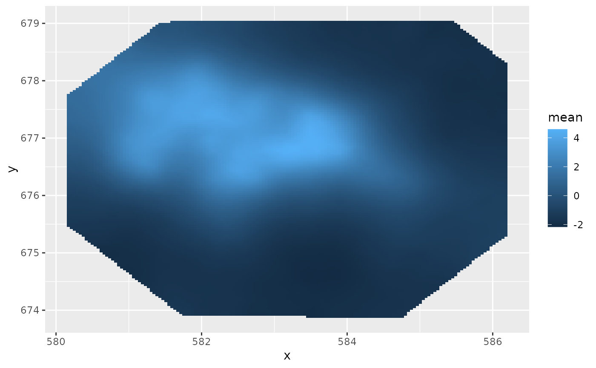

Takes a fitted bru object produced by the function bru and produces
predictions given a new set of values for the model covariates or the
original values used for the model fit. The predictions can be based on any
R expression that is valid given these values/covariates and the joint
posterior of the estimated random effects.
# S3 method for bru predict( object, data = NULL, formula = NULL, n.samples = 100, seed = 0L, num.threads = NULL, include = NULL, exclude = NULL, drop = FALSE, ... )
| object | |
|---|---|
| data | A data.frame or SpatialPointsDataFrame of covariates needed for the prediction. |
| formula | A formula defining an R expression to evaluate for each generated
sample. If |
| n.samples | Integer setting the number of samples to draw in order to calculate the posterior statistics. The default is rather low but provides a quick approximate result. |
| seed | Random number generator seed passed on to |
| num.threads | Specification of desired number of threads for parallel computations. Default NULL, leaves it up to INLA. When seed != 0, overridden to "1:1" |
| include | Character vector of component labels that are needed by the predictor expression; Default: NULL (include all components that are not explicitly excluded) |
| exclude | Character vector of component labels that are not used by the
predictor expression. The exclusion list is applied to the list
as determined by the |
| drop | logical; If |
| ... | Additional arguments passed on to |
a data.frame or Spatial* object with predicted mean values and other summary statistics attached.
Mean value predictions are accompanied by the standard errors, upper and lower 2.5% quantiles, the median, variance, coefficient of variation as well as the variance and minimum and maximum sample value drawn in course of estimating the statistics.
Internally, this method calls generate.bru() in order to draw samples from
the model.
# \donttest{ if (bru_safe_inla()) { # Load the Gorilla data data(gorillas, package = "inlabru") # Plot the Gorilla nests, the mesh and the survey boundary ggplot() + gg(gorillas$mesh) + gg(gorillas$nests) + gg(gorillas$boundary) + coord_fixed() # Define SPDE prior matern <- INLA::inla.spde2.pcmatern(gorillas$mesh, prior.sigma = c(0.1, 0.01), prior.range = c(0.01, 0.01) ) # Define domain of the LGCP as well as the model components (spatial SPDE effect and Intercept) cmp <- coordinates ~ mySmooth(main = coordinates, model = matern) + Intercept(1) # Fit the model, with "eb" instead of full Bayes fit <- lgcp(cmp, gorillas$nests, samplers = gorillas$boundary, domain = list(coordinates = gorillas$mesh), options = list(control.inla = list(int.strategy = "eb")) ) # Once we obtain a fitted model the predict function can serve various purposes. # The most basic one is to determine posterior statistics of a univariate # random variable in the model, e.g. the intercept icpt <- predict(fit, NULL, ~ c(Intercept = Intercept_latent)) plot(icpt) # The formula argument can take any expression that is valid within the model, for # instance a non-linear transformation of a random variable exp.icpt <- predict(fit, NULL, ~ c( "Intercept" = Intercept_latent, "exp(Intercept)" = exp(Intercept_latent) )) plot(exp.icpt, bar = TRUE) # The intercept is special in the sense that it does not depend on other variables # or covariates. However, this is not true for the smooth spatial effects 'mySmooth'. # In order to predict 'mySmooth' we have to define where (in space) to predict. For # this purpose, the second argument of the predict function can take \code{data.frame} # objects as well as Spatial objects. For instance, we might want to predict # 'mySmooth' at the locations of the mesh vertices. Using vrt <- vertices(gorillas$mesh) # we obtain these vertices as a SpatialPointsDataFrame ggplot() + gg(gorillas$mesh) + gg(vrt, color = "red") # Predicting 'mySmooth' at these locations works as follows mySmooth <- predict(fit, vrt, ~mySmooth) # Note that just like the input also the output will be a SpatialPointsDataFrame # and that the predicted statistics are simply added as columns class(mySmooth) head(vrt) head(mySmooth) # Plotting the mean, for instance, at the mesh node is straight forward ggplot() + gg(gorillas$mesh) + gg(mySmooth, aes(color = mean), size = 3) # However, we are often interested in a spatial field and thus a linear interpolation, # which can be achieved by using the gg mechanism for meshes ggplot() + gg(gorillas$mesh, color = mySmooth$mean) # Alternatively, we can predict the spatial field at a grid of locations, e.g. a # SpatialPixels object covering the mesh pxl <- pixels(gorillas$mesh) mySmooth2 <- predict(fit, pxl, ~mySmooth) # This will give us a SpatialPixelDataFrame with the columns we are looking for head(mySmooth2) ggplot() + gg(mySmooth2) }#>#> Warning: Discarded ellps unknown in Proj4 definition: +proj=longlat +R=1 +no_defs +type=crs#> Warning: Discarded datum unknown in Proj4 definition#> Warning: Discarded ellps unknown in Proj4 definition: +proj=longlat +R=6378137 +no_defs +type=crs#> Warning: Discarded datum unknown in Proj4 definition#> Warning: Discarded ellps unknown in Proj4 definition: +proj=longlat +R=6378137 +no_defs +type=crs#> Warning: Discarded datum unknown in Proj4 definition#> Warning: Discarded ellps unknown in Proj4 definition: +proj=geocent +R=1 +units=m +no_defs +type=crs#> Warning: Discarded datum unknown in Proj4 definition#> Warning: Discarded ellps unknown in Proj4 definition: +proj=longlat +R=1 +no_defs +type=crs#> Warning: Discarded datum unknown in Proj4 definition#> Warning: Discarded ellps unknown in Proj4 definition: +proj=longlat +R=6378137 +no_defs +type=crs#> Warning: Discarded datum unknown in Proj4 definition#> Warning: Discarded ellps unknown in Proj4 definition: +proj=longlat +R=6378137 +no_defs +type=crs#> Warning: Discarded datum unknown in Proj4 definition#> Warning: Discarded ellps unknown in Proj4 definition: +proj=geocent +R=1 +units=m +no_defs +type=crs#> Warning: Discarded datum unknown in Proj4 definition#> Warning: Discarded ellps unknown in Proj4 definition: +proj=longlat +R=1 +no_defs +type=crs#> Warning: Discarded datum unknown in Proj4 definition#> Warning: Discarded ellps unknown in Proj4 definition: +proj=longlat +R=6378137 +no_defs +type=crs#> Warning: Discarded datum unknown in Proj4 definition#> Warning: Discarded ellps unknown in Proj4 definition: +proj=longlat +R=6378137 +no_defs +type=crs#> Warning: Discarded datum unknown in Proj4 definition#> Warning: Discarded ellps unknown in Proj4 definition: +proj=geocent +R=1 +units=m +no_defs +type=crs#> Warning: Discarded datum unknown in Proj4 definition#> Warning: Discarded ellps unknown in Proj4 definition: +proj=longlat +R=1 +no_defs +type=crs#> Warning: Discarded datum unknown in Proj4 definition#> Warning: Discarded ellps unknown in Proj4 definition: +proj=longlat +R=6378137 +no_defs +type=crs#> Warning: Discarded datum unknown in Proj4 definition#> Warning: Discarded ellps unknown in Proj4 definition: +proj=longlat +R=6378137 +no_defs +type=crs#> Warning: Discarded datum unknown in Proj4 definition#> Warning: Discarded ellps unknown in Proj4 definition: +proj=geocent +R=1 +units=m +no_defs +type=crs#> Warning: Discarded datum unknown in Proj4 definition#> Warning: Discarded ellps unknown in Proj4 definition: +proj=longlat +R=1 +no_defs +type=crs#> Warning: Discarded datum unknown in Proj4 definition#> Warning: Discarded ellps unknown in Proj4 definition: +proj=longlat +R=6378137 +no_defs +type=crs#> Warning: Discarded datum unknown in Proj4 definition#> Warning: Discarded ellps unknown in Proj4 definition: +proj=longlat +R=6378137 +no_defs +type=crs#> Warning: Discarded datum unknown in Proj4 definition#> Warning: Discarded ellps unknown in Proj4 definition: +proj=geocent +R=1 +units=m +no_defs +type=crs#> Warning: Discarded datum unknown in Proj4 definition# }